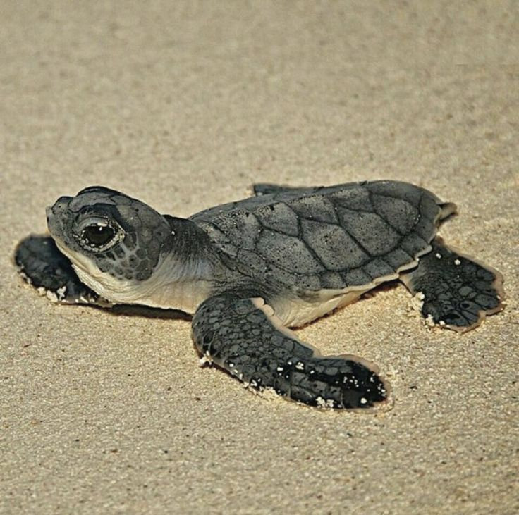
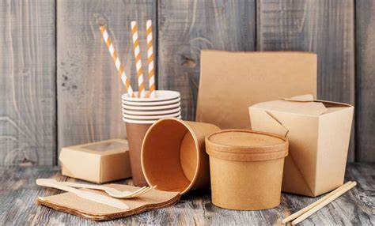

¿Por qué es importante?
El océano abarca el 70% de la superficie de la tierra, y aunque no podamos consumir el agua salada, dependemos de los océanos:el agua dulce y la mitad del oxígeno que respiramos tienen su origen en él. Además, es capaz de influir en el clima y la temperatura; también nos proporciona comida, medicamentos, minerales y recursos energéticos. En él viven multitud de especies animales y vegetales. En definitiva, el océano determina las características de la Tierra. Es por ello que debemos conoces qué es lo que daña a los oceanos asi como seguir los siguientes consejos para cuidar el océano:
¿Que es lo que afecta a los oceanos?
Water_Bottle_LargeContaminación por plásticos en el océano
Bolsas de plástico, globos, botellas de vidrio, zapatos, material de embalaje… todo lo que no se elimina o se recicla acaba en el mar, convertido en el gran basurero de la humanidad. De entre toda esa basura, preocupa especialmente la compuesta por plástico, ya que se descompone muy lentamente, y amenaza seriamente a los ecosistemas marinos y contaminando los océanos desde las costas hasta las profundidades.
¿Sabes cuanto tiempo tarda en descomponerse el plástico ?
- Botella: 500 años en degradarse
- Cubiertos: 400 años
- Popote: 100 años
- Vaso: 65-75 años
- Bolsa: 55 años

PhishingSobrepesca
En el océano, si la gente pesca demasiado y no deja suficientes peces para reproducirse, la población de peces puede disminuir mucho. Esto no es bueno porque significa que habrá menos peces en el futuro, y eso afecta a los animales que dependen de los peces para comer.
Consecuencias de la Sobrepesca
- Pérdida de biodiversidad y desequilibrio de los ecosistemas marinos.
- Aproximadamente el 80% de las poblaciones de peces están sobreexplotadas.
- Disminución de las poblaciones en general y, en concreto, de las de depredadores marinos.
.jpg)
PhishingEspecies afectadas
Un ejemplo en México son las tortugas marinas.Nuestro país es privilegiado por su diversidad de tortugas marinas. Siete de las ocho especies reconocidas en el mundo anidan en las playas de México, tanto en las del Pacífico como en las del Golfo de México y El Caribe.
- Tortuga Caguama
- Tortuga Carey del Pacífico
- Tortuga Verde
- Tortuga Golfina
- Tortuga Lora o Kempi
- Tortuga Prieta
- Tortuga Laúd

¿Cómo se afecta a estas especies ?
- La captura y mortalidad incidental en pesquerías.
- La destrucción, contaminación o degradación de lugares de alimentación.
- La transformación o destrucción de playas de anidación por desarrollos costeros (iluminación artificial).
- Las tortugas marinas aún son sacrificadas por su carne y huevos
- La extracción directa (práctica ilegal en casi todos los países), particularmente cuando se relaciona con el tráfico internacional.

¿Cómo ayudar?
Beach_AccessSe responsable en tus vacaciones
Siempre que disfrutes de nadar, surfear o simplemente relajarte en la playa, limpia tus residuos. Explora y aprecia el océano sin interferir con la vida salvaje y nunca remuevas rocas o corales.
¿Te gustaría tener que estar en lugares llenos de basura?

Money_OffNo compres productos que exploten la vida marina
Es común la venta de artesanías elaboradas con productos del océano, pero estos elementos se obtienen perturbando el ecosistema y muchas veces de forma ilegal, lo que puede ser penado por la ley.
NUNCA COMPRES OBJETOS COMO JOYERÍA DE CORAL, NI ARTÍCULOS PROVENIENTES DE ESTRELLAS DE MAR, TORTUGAS , TIBURONES, PECES O BALLENAS.

Set_MealEspecies invasoras
Nunca liberes pescados de acuario en el océano u otros cuerpos de agua, ya que puedes introducir especies no nativas que pueden ser dañinas para el ecosistema local.

En la imagen anterior se aprecia un claro ejemplo de especie no nativa, se llama pez león y debido a su inconciente introducción a los arrecifes de la riviera maya y el caribe.Debido a su apetito voraz atenta en contra del ecosistema ya que deja a los otros depredadores,que si pertenecen al ecosistema, sin alimento afectando a la cadena alimenticia original.
Si quieres saber más acerca de este caso da click aqui
CompostUtilizar productos biodegradables en las playas
Es una manera de no dejar tu huella contaminante cuando pases tiempo en las playas y garantizar la protección de las especies marinas.

Existe una isla de basura en el oceano conocida como "La gran mancha del pacifico", la cual mide DOS veces el tamaño de Texas y contiene cerca de 80,000 toneladas de basura(en su mayoria plástico).
Cuando hablamos de especies invasoras nos referimos a especies de origen que al llegar a un nuevo lugar, se establecen y se propagan a gran velocidad modificando la estructura y el funcionamiento del ecosistema.
Un producto biodegradable es algo que puede descomponerse de forma natural con el tiempo. En lugar de quedarse en el medio ambiente durante mucho tiempo, se descompone en componentes más pequeños y amigables para la naturaleza.
Inicio